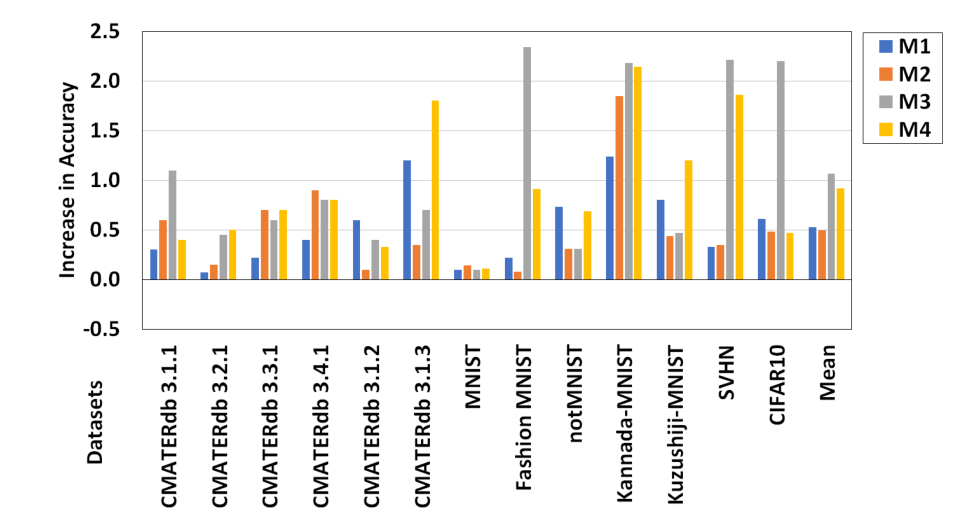
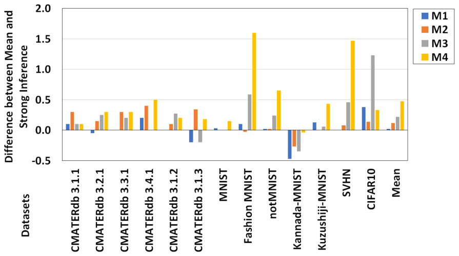

Training a network by repairing its weakest branch first
Some neural networks have several branches that each produce their own score for every class. The usual way to use them is to average the scores. We tried something different: during training, for each class we find the branch that is doing worst and send the learning signal through that branch. We call the method GuideBP.
The problem
A network that classifies images ends in a set of raw scores, one per class, called logits. Many designs produce several sets of logits. You can train three copies of the same network from different starting points, or attach extra classifiers to the middle of a deep network, or have one network look at different regions of the picture. The scores are then added or averaged before the loss is computed. The loss is a number that measures how wrong the network is.
Training works by backpropagation. The loss is traced backwards through the network, and each weight gets a gradient, a nudge telling it which way to move. With averaging, the gradient is split equally among all branches. A branch that already handles a class well still receives its share, and a weak branch gets no extra attention.
The idea
We wanted the learning to concentrate on what is still wrong. A team is as strong as its weakest player, and averaging works less well when one branch lags. So we compute a weakness score for every class score in every branch. For the true class, a branch is weaker the lower its score. For every wrong class, a branch is weaker the higher its score.

For each class we then pick the branch with the highest weakness and build a new set of logits from those picks. The loss is computed on this combined set. Because only the picked entries are in the loss, the gradient flows back through the weakest pathways only. Stronger pathways are left alone for that class and that example.

How it works
After training there are two ways to make a prediction. In mean inference we simply average the branches' outputs. In strong inference we take, for each class, the branch with the least weakness. The true label is not known at test time, so the weakness is judged against a pseudo target built from the branches' own outputs.
We tried the method in four settings. M1 combines three ResNet18 networks, a standard image network. M2 uses GoogLeNet, which normally has extra classifiers that are cut away after training. We keep them, so they also take part at test time. M3 builds on a YOLOv3-style network and produces predictions for 16 regions of its internal feature maps. M4 combines 23 small networks that each read a different region of the input, following an earlier published design. Nothing was pre-trained and no data augmentation was used. The experiments cover 13 image datasets, from handwritten digits in several scripts to SVHN and CIFAR-10.
What we found
The paper's first observation is that at least one of the two inference modes always beat plain averaging. The accuracies below are means over the 13 datasets (Table 2), with GuideBP using mean inference.
- M1, three ResNet18s: 97.54% with averaging, 98.01% with GuideBP. A single ResNet18 scored 97.31%.
- M2, GoogLeNet with extra classifiers: 97.32% with averaging, 97.80% with GuideBP. Plain GoogLeNet scored 96.73%.
- M3, feature regions: 94.75% with averaging, 95.78% with GuideBP.
- M4, input regions: 95.61% with averaging, 96.52% with GuideBP.

Which setting wins depends on the data (Table 2). M3 was best on the six CMATERdb handwriting sets and on Fashion-MNIST, whose images follow a fairly fixed template with little variation. M2 was best on four of the five MNIST-like sets and on SVHN. M1 was best on CIFAR-10, where objects of the same class vary a lot in position and shape, so the class has no fixed template.
Results in more detail
The paper's results table is wide, so we show it in two halves. Each row is a dataset. Within a setting, compare the usual averaging against GuideBP; for M1 and M2 the first column is the original single network, ResNet18 or GoogLeNet. The last row is the mean over the datasets.
| Datasets | M1: Single ResNet18 | M1: Average of 3 Logits | M1: Mean Inference | M2: Native GoogLeNet | M2: Average of 3 Logits | M2: Mean Inference |
|---|---|---|---|---|---|---|
| CMATERdb 3.1.1 | 99.20 | 99.50 | 99.80 | 96.70 | 98.70 | 99.30 |
| CMATERdb 3.2.1 | 99.30 | 99.48 | 99.50 | 97.50 | 99.35 | 99.50 |
| CMATERdb 3.3.1 | 99.40 | 99.48 | 99.70 | 98.40 | 98.90 | 99.60 |
| CMATERdb 3.4.1 | 98.90 | 99.10 | 99.50 | 97.20 | 98.70 | 99.60 |
| CMATERdb 3.1.2 | 97.67 | 97.80 | 98.40 | 98.00 | 98.23 | 98.33 |
| CMATERdb 3.1.3 | 96.40 | 96.70 | 97.70 | 96.90 | 97.32 | 97.67 |
| MNIST | 99.63 | 99.63 | 99.73 | 99.58 | 99.59 | 99.73 |
| Fashion MNIST | 94.00 | 94.28 | 94.50 | 94.30 | 94.45 | 94.50 |
| notMNIST | 96.80 | 97.00 | 97.73 | 97.12 | 97.42 | 97.73 |
| Kannada-MNIST | 97.40 | 97.63 | 98.40 | 96.67 | 97.02 | 98.60 |
| Kuzushiji-MNIST | 96.67 | 97.20 | 98.00 | 97.40 | 97.66 | 98.10 |
| Svhn | 95.50 | 95.67 | 96.00 | 95.82 | 95.85 | 96.20 |
| Cifar10 | 94.19 | 94.59 | 95.20 | 91.94 | 92.02 | 92.50 |
| Mean | 97.31 | 97.54 | 98.01 | 96.73 | 97.32 | 97.80 |
Take the Bangla digits (CMATERdb 3.1.1). Native GoogLeNet scored 96.70%. Keeping its extra classifiers and averaging them gave 98.70%, and GuideBP with mean inference gave 99.30% (Table 2). Harder data show the same direction. On the compound Bangla characters (CMATERdb 3.1.3), which have 199 classes and relatively few images per class, M1 went from 96.40% for a single ResNet18 to 96.70% with averaging, 97.90% with strong inference and 97.70% with mean inference (Table 2). On CIFAR-10, M1 scored 94.19%, 94.59% and 95.20% for single network, averaging and GuideBP with mean inference (Table 2).
The other two settings are in the next table. M4 combines the 23 small networks that each read a region of the input. On SVHN it scored 89.47% with averaging, 89.86% with strong inference and 91.33% with mean inference (Table 2).
| Datasets | M3: Average of 16 grids | M3: Strong Inference | M3: Mean Inference | M4: Average of 23 Branches | M4: Strong Inference | M4: Mean Inference |
|---|---|---|---|---|---|---|
| CMATERdb 3.1.1 | 98.70 | 99.70 | 99.80 | 99.10 | 99.40 | 99.50 |
| CMATERdb 3.2.1 | 99.40 | 99.60 | 99.85 | 99.10 | 99.30 | 99.60 |
| CMATERdb 3.3.1 | 99.30 | 99.70 | 99.90 | 98.70 | 99.10 | 99.40 |
| CMATERdb 3.4.1 | 99.00 | 99.80 | 99.80 | 98.90 | 99.20 | 99.70 |
| CMATERdb 3.1.2 | 98.50 | 98.63 | 98.90 | 97.67 | 97.80 | 98.00 |
| CMATERdb 3.1.3 | 97.20 | 97.90 | 97.70 | 94.70 | 96.32 | 96.50 |
| MNIST | 99.55 | 99.65 | 99.65 | 99.29 | 99.25 | 99.40 |
| Fashion MNIST | 92.26 | 94.01 | 94.60 | 93.09 | 92.40 | 94.00 |
| notMNIST | 97.02 | 97.09 | 97.33 | 95.98 | 96.02 | 96.67 |
| Kannada-MNIST | 96.67 | 98.85 | 98.50 | 96.40 | 98.54 | 98.50 |
| Kuzushiji-MNIST | 97.20 | 97.61 | 97.67 | 96.00 | 96.77 | 97.20 |
| Svhn | 84.19 | 85.94 | 86.40 | 89.47 | 89.86 | 91.33 |
| Cifar10 | 72.80 | 73.77 | 75.00 | 84.53 | 84.67 | 85.00 |
| Mean | 94.75 | 95.56 | 95.78 | 95.61 | 96.05 | 96.52 |
The paper also compares the two ways of using GuideBP after training. Mean inference scored best on several datasets, and strong inference was better on some. Fig. 9 shows the difference per dataset. On Kannada-MNIST, for example, strong inference was ahead for M3, with 98.85% against 98.50% for mean inference (Table 2).

Discussion
Why does it work? Plain averaging splits the learning signal equally, so a branch that lags still drags the combination down, as a team is as strong as its weakest player. GuideBP attends to the wrongest predictions first. We think this pushes the branches to perform at a similar level, which makes combining them more effective. Once training is over, the individual branches have fewer weaknesses, so even simple mean inference gets a boost. Unlike traditional ensembles, the networks do not have to be trained one by one.
GuideBP is a general way to combine the outputs of multi-branch networks, not a benchmark model. Because our four settings are upgrades of existing networks, they inherit those networks' drawbacks. M3, for instance, reached only 75.00% on CIFAR-10 and 86.40% on SVHN, against 95.20% and 96.00% for M1 (Table 2). We explain this by the variation inside a class: where objects vary a lot in position and shape, the feature regions cannot be exploited as effectively. A McNemar test, which checks whether two classifiers differ by more than chance, showed that apart from M1 the proposed models learned significantly different concepts from the baselines (Table 3). MNIST was the exception on the datasets, probably because accuracy there is already saturated.
In the conclusion we describe GuideBP as a viable alternative to averaging, ahead of it across 13 datasets, and the paper adds that it even reaches new benchmark scores on a few. Right now the method acts only on the output logits. The conclusion suggests that a similar approach might be adopted for inner layers in future work.
Sources
The figures and tables listed here are taken from the paper cited at the top of this page; the numbers quoted in the text come from it too.
- Figures: Fig. 2, Fig. 1, Fig. 8, Fig. 9
- Tables: Table 2: accuracy of every setting on each of the 13 datasets, with the mean over datasets; Table 3: McNemar test p-values comparing the proposed methods and the standard networks
Cite the paper
Swarnendu Ghosh, B Mandal, T Gonçalves, P Quaresma, M Nasipuri, N Das (2023). GuideBP: Guided Backpropagation in Multi-output Neural Networks by Channeling Gradients Through Weaker Logits. 4th International Conference on Frontiers in Computing and Systems (COMSYS 2023), pp. 165–183 · Springer.
@inproceedings{ghosh2023guidebp,
author = {Ghosh, Swarnendu and Mandal, B and Gon{\c c}alves, T and Quaresma, P and Nasipuri, M and Das, N},
title = {{GuideBP:} Guided Backpropagation in Multi-output Neural Networks by Channeling Gradients Through Weaker Logits},
booktitle = {4th International Conference on Frontiers in Computing and Systems (COMSYS 2023)},
pages = {165--183},
publisher = {Springer},
year = {2023},
doi = {10.1007/978-981-97-2611-0_12}
}